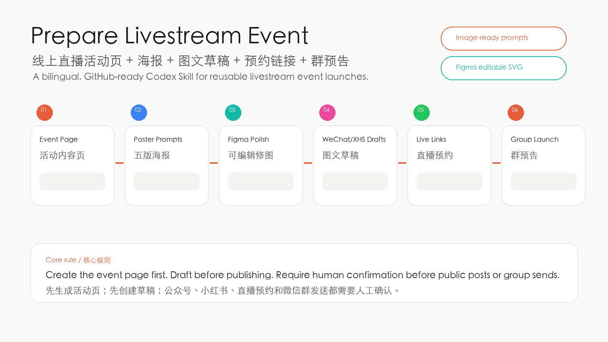
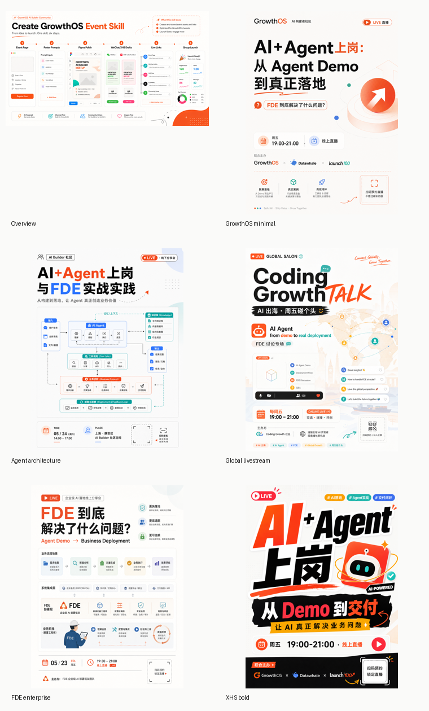
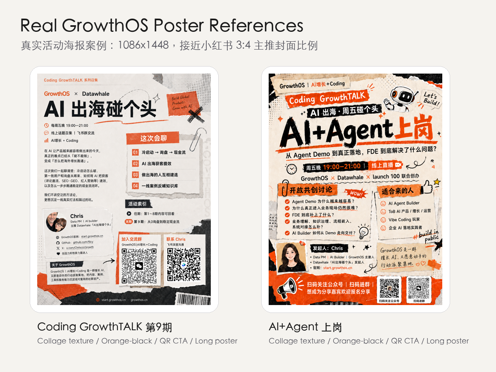

Codex Skill for livestream launch
线上直播活动，一次准备成套发布素材。
把活动 brief、Notion 页面或草稿内容，整理成活动内容页、五版海报方向、公众号/小红书图文草稿、直播预约链接记录和微信群预告。

它不是自动发帖机器人。
它更像活动运营搭子：先把内容、图片、文案和发布清单准备好，再让人确认，最后再发布。
活动 brief
输入主题、时间、嘉宾、议程、CTA、二维码和参考页面。
内容创建页
先结构化活动信息，避免海报和文案各写各的。
五版海报
生成适配 Image 2.5 / 图片模型的风格 prompt。
Figma 精修
把最终标题、安全区、二维码和文字层变成可调整素材。
图文草稿
公众号、小红书、预热群消息和最终群公告一次起草。
确认发布
直播预约链接和公开发布都保留人工确认闸门。
用真实活动反复打磨。
默认参考 GrowthOS / Coding GrowthTALK 的视觉语言：纸张拼贴、橙黑对比、超大标题、直播时间条、联合主办方和二维码 CTA。


安装后直接在 Codex 里调用。
把它 clone 到本地 skills 目录，重启 Codex 后，用一句话就能开始准备一场线上直播活动。
适合持续做直播分享、线上沙龙、社群共创、产品发布、AI Builder 活动的团队。
mkdir -p "${CODEX_HOME:-$HOME/.codex}/skills"
git clone https://github.com/flicy/prepare-livestream-event.git \
"${CODEX_HOME:-$HOME/.codex}/skills/prepare-livestream-event"发布前，它会先帮你把这些准备好。
自动化的边界很清楚：能自动生成草稿，不能越过你的确认去公开发布。
-
01
活动内容页把主题、目标、适合人群、议程、嘉宾、链接和发布状态沉淀下来。
-
02
海报 prompt 包默认生成五版风格，方便你快速选方向，再进 Figma 修细节。
-
03
公众号和小红书草稿分别适配长图文和信息流语气，保留链接、二维码和直播预约占位。
-
04
微信群预告确认海报和链接后，生成能直接发群的一小段活动介绍。